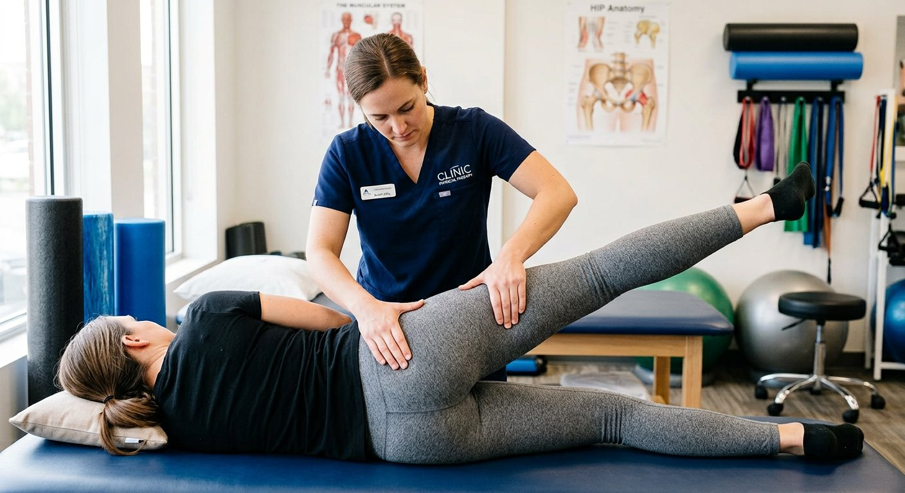
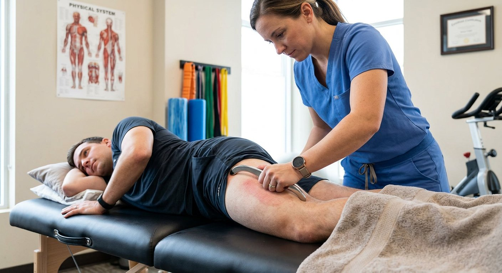
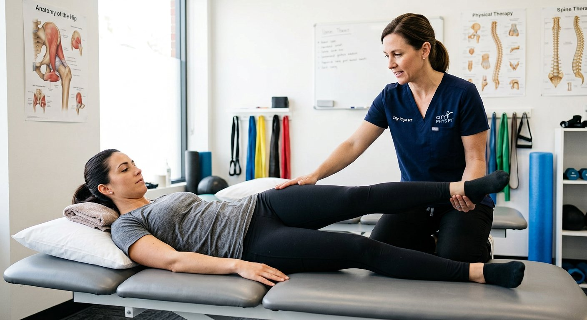
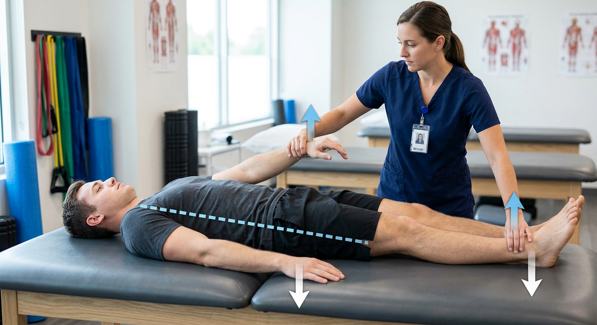
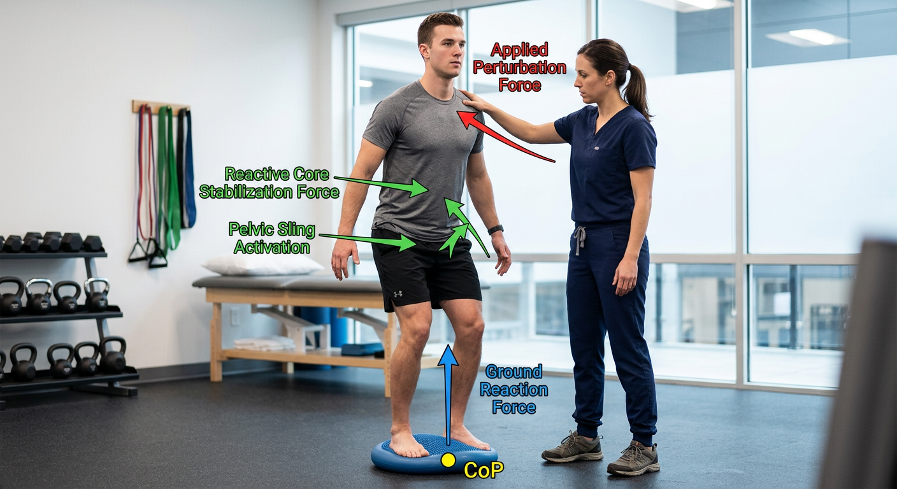

8 Steps, One Session
Every NKT session — whether it's a 15-minute single-pair fix or a full Level 3 evaluation — follows the same underlying logic: find what's genuinely weak, find what's secretly driving that weakness, release the driver, then immediately re-teach the weak muscle to fire on its own. The 8 steps below map directly onto the fields in the Session Workflow tool, so you can fill it in as you go.
Intake & Subjective History
Before any testing begins, get the story: what hurts, when it started, what makes it better or worse, and what's changed since the last visit. This becomes your Subjective (S) section later. Listen for movement patterns in the complaint itself — "it hurts going up stairs" tells you to look at hip extension and single-leg stability, not just the painful joint.

Baseline Manual Muscle Test
Isolate a muscle related to the complaint (here, Gluteus Medius for lateral hip pain) in a shortened position, and apply a smooth 2-second isometric ramp. You're checking for a crisp, rigid lock (Facilitated) versus a spongy give (Inhibited) — not raw strength on a 0–5 scale.
Search for the Driver (Therapy Localization)
Working through likely candidates (start with the Level 1 muscle-pair library — e.g. TFL, Quadratus Lumborum, Adductors for a Glute Medius receiver), apply light contact or a brief rub to each suspect, then immediately retest the inhibited muscle. Still weak? Move to the next candidate. Snaps to rock-solid strong? You've found a reactive pair.

Release the Confirmed Driver
Once a reactive pair is confirmed, spend 30–60 seconds releasing the driver using whatever technique you're trained in — soft tissue work, IASTM, ischemic compression, or stretching. The goal is to modulate the overactive muscle spindle afferents feeding that driver's "on" signal.

Activate the Receiver
Without delay — you're working inside the ~30–60 second neuroplastic window right after the release — cue an isolated isometric contraction of the receiver muscle: typically 3–5 reps of a 5-second hold at 50–70% effort. This is the step that actually re-teaches the Motor Control Center to use the muscle again.

Retest in the Clear
Test the receiver muscle again in isolation — no TL, no help. It should now test Strong in the Clear. If it does, the correction held for this moment; if it's still weak, the driver release may have been incomplete, or there's a second driver in the same chain still to find.

Functional / Global Retest
An isolated muscle testing strong doesn't guarantee it holds under real movement. Re-check a functional task tied to the chief complaint — single-leg stance, a squat, gait, or a standing perturbation — and compare it to how it looked before treatment.
Home Program & Next-Session Plan
Hand off a simple home program that mirrors exactly what you just did in the room: release the driver first, then activate the receiver — typically 2–3 times a day for 2–4 weeks to let the new pattern consolidate. Note what you'll re-check first at the next visit.
Quick Recap Checklist
- Take a subjective history — don't treat the pain site yet.
- Confirm a muscle is genuinely Weak in the Clear.
- Therapy-localize candidate drivers and retest immediately until one confirms.
- Release the confirmed driver for 30–60 seconds.
- Activate the receiver immediately, isolated, 3–5 reps x 5s holds.
- Retest the receiver in the clear — it should now test strong.
- Re-check a functional/global movement tied to the complaint.
- Assign home program (release first, activate second) and plan the next visit.